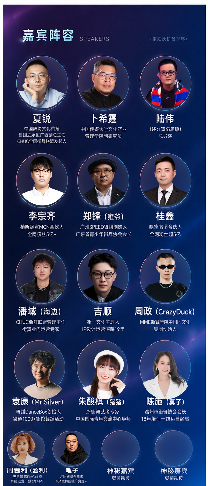
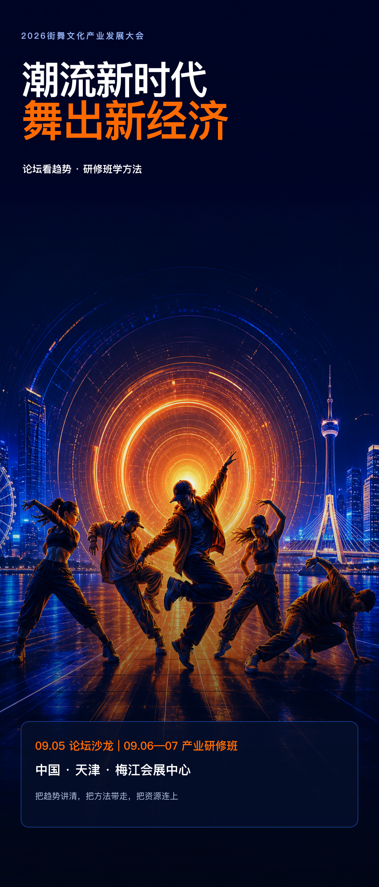
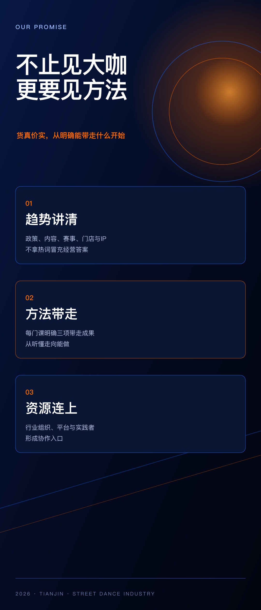
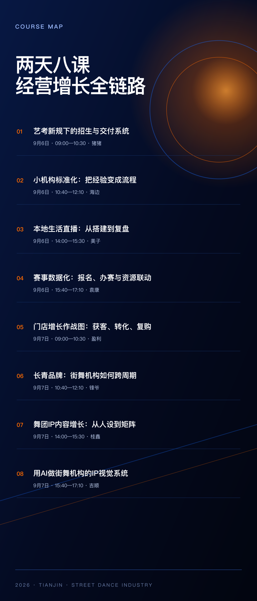

看懂变化，少走弯路
把政策、升学与行业趋势翻译成街舞机构下一步可以执行的动作。
2026街舞文化产业发展大会 · 论坛 / 产业研修班
论坛看趋势，研修班学方法。把趋势讲清，把方法带走，把资源连上。
WHY THIS FORUM
这不是把街舞包装成热闹，而是把街舞机构真实遇到的招生、交付、流量、赛事、品牌与 AI 问题，拆成能回去执行的动作。
把政策、升学与行业趋势翻译成街舞机构下一步可以执行的动作。
围绕产品、门店、直播、赛事、内容和品牌，拆解真实经营问题。
课程计划输出清单、流程、看板与内容矩阵，让学习不止停在听懂。
同场链接产业研究、内容制作、行业组织和一线经营实践者。
WHAT YOU TAKE AWAY
两天八课不是信息堆叠，而是把趋势判断、产品交付、门店标准化、流量转化、赛事联动、品牌与 AI 连接起来。
识别艺考、青年文化与街舞产业变化，校准机构方向。
重做课程产品、家长沟通和备考交付节点。
梳理招生、排课、教务、转化、续费的关键流程。
建立本地直播、内容栏目与商务承接的转化链路。
用数据化办赛连接用户、内容与本地合作资源。
沉淀长期品牌资产，并搭建可持续使用的视觉工作流。
FORUM · 09.05
WORKSHOP · 09.06—07
FORUM GUESTS
主论坛嘉宾与产业研修讲师同场，从行业趋势、内容传播到一线机构经营形成完整视角。
街舞文化研究者
中国街舞文化产业新路径中国传媒大学文化产业管理学院副研究员
新兴文化产业与青年经济《这！就是街舞》总导演
内容生产与大众传播文化产业嘉宾
品牌内容与产业连接广州 SPEED 极速舞团创始人
长青品牌与行业实践舞团内容与新媒体运营实践者
舞团内容 IP 增长浙江街舞行业实践者
机构运营标准化街舞潮流 IP 实践者
潮流 IP 与视觉系统街舞文化与青年交流实践者
文化创新与跨界连接舞匣 DanceBox 创始人
赛事数据化与资源联动流行舞艺考与教研实践者
艺考政策与交付本地流量运营实践者
本地生活直播实战街舞门店经营实践者
门店增长与行业实战
嘉宾阵容与分工以主办方最终发布为准；平台嘉宾及个别出席安排仍在确认中。
THREE-DAY AGENDA
9月5日主论坛建立产业坐标，9月6—7日研修班完成八个经营专题。9月5日议程明确标注为拟定版本。
主论坛
论坛议程为拟定版本，主持、平台嘉宾与实际时间以组委会最终通知为准。
产业研修 Day 1
产业研修 Day 2
8 PRACTICAL COURSES
每门课保留 3 项带走成果，并增加课程与嘉宾信息说明；证据等级不降级，未确认经营数字不进入传播页面。
猪猪流行舞艺考与教研实践者
从政策变化出发，重做机构的产品、沟通与交付链路。
公开报道可核验其江西街舞教研经历；课程与现职由主办方材料提供，待本人最终确认。
海边浙江街舞行业实践者
不靠老板盯人，把招生、排课、教务和复购变成可执行流程。
公开资料可核验其浙江街舞行业经历；主办方文档姓名用字与公开资料冲突，公开物料仅用艺名。
美子街舞机构本地流量运营实践者
围绕真实门店，把直播间、团购品、话术和复盘连成一条转化链。
课程与履历来自主办方材料；业绩数字未获独立公开来源支持，首版不作传播。
袁康舞匣 DanceBox 创始人
用一场赛事沉淀用户、内容、票务和城市合作资源，而非只做一次活动。
公开资料可核验其创始人身份及赛事数字化业务。
盈利街舞门店经营实践者
不讲单一爆单神话，拆解从线索到长期会员价值的完整经营动作。
课程与履历来自主办方材料；单店业绩尚无独立公开来源，首版不作承诺。
锋爷广州 SPEED 极速舞团创始人
从文化根基、人才梯队与城市关系出发，建立不依赖短期流量的品牌资产。
公开资料可核验其公开经历；主办方文档与公开资料姓名用字冲突，公开物料仅用艺名。
桂鑫舞团内容与新媒体运营实践者
把偶然爆款拆成稳定栏目、账号分工、内容复用与商务承接。
课程与履历来自主办方材料；粉丝量与播放量波动且口径不一，首版不写具体数字。
吉顺天津街舞与潮流IP实践者
现场从品牌关键词出发，搭建能持续用于招生、赛事和周边的视觉资产。
公开资料可核验其天津街舞联盟与创一文化公开经历；AI课程为本届主办方拟定内容。
VISUAL SET
长图海报保留 9:21 比例，用于朋友圈、社群与公众号正文承接；H5 负责完整解释课程、嘉宾、议程与证据边界。



WHO SHOULD COME
REAL, NOT HYPE
已核验与待确认分开呈现。粉丝量、营收、播放量等口径易变数据，未获独立来源前不作为承诺；首版不写具体数字，第二版继续保留事实分级与未核验经营数字禁用边界。涉及姓名、主办单位、肖像授权、票价名额、报名二维码等正式发布要素，仍按营销交付目录中的公开前确认清单处理。
潮流不只被看见，更要形成产业。